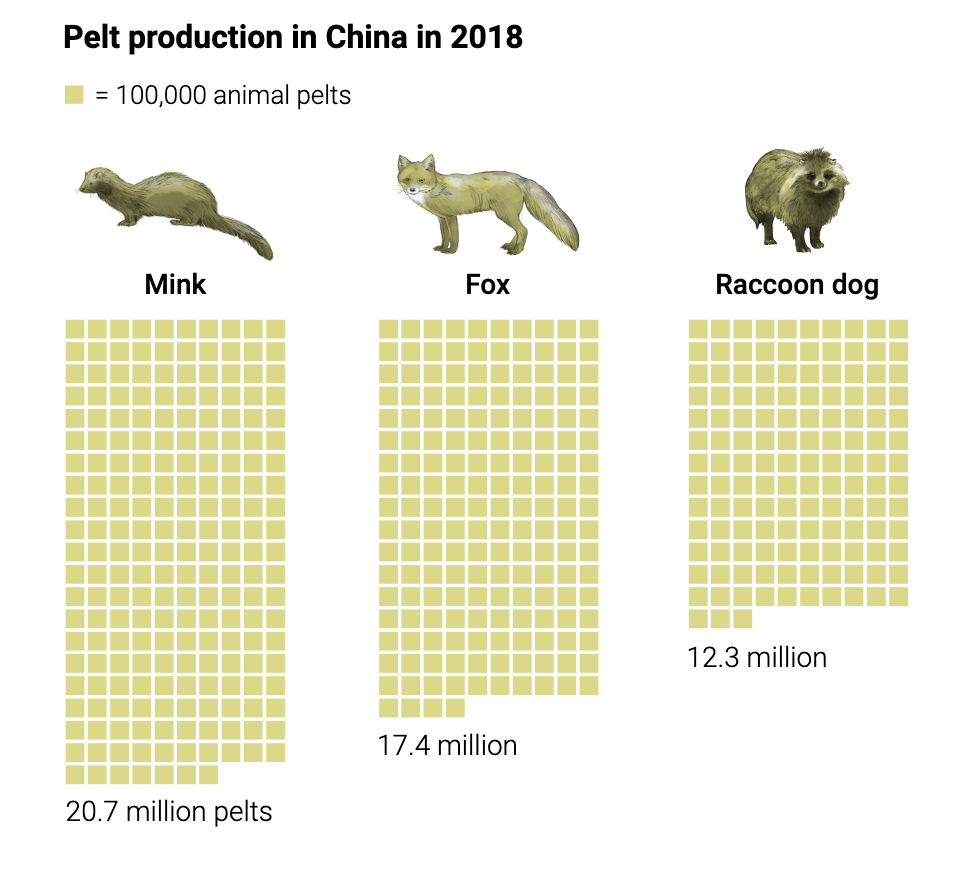
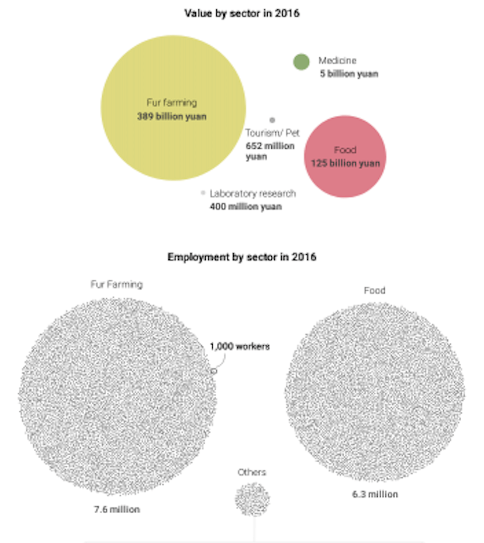
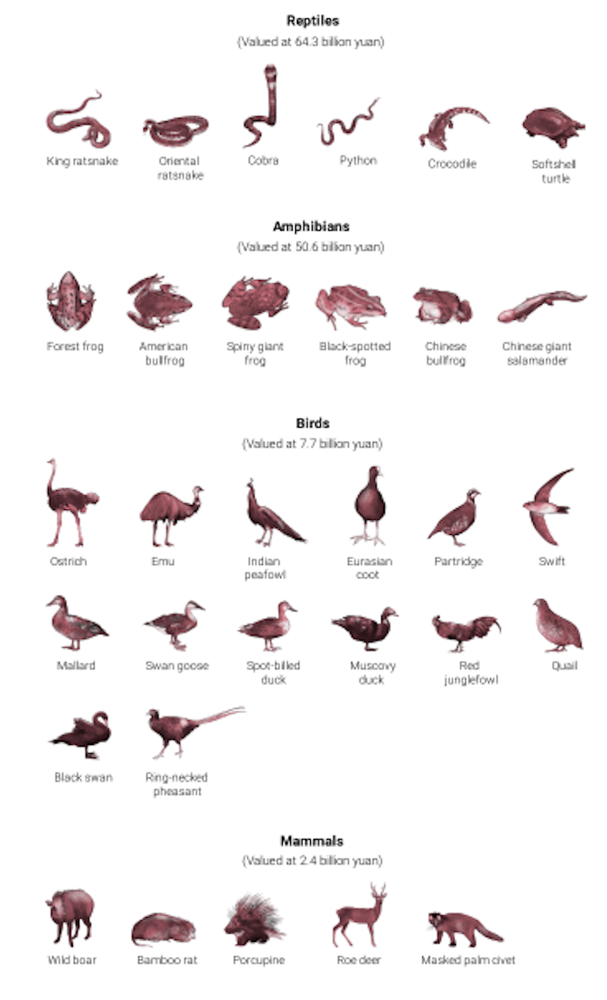
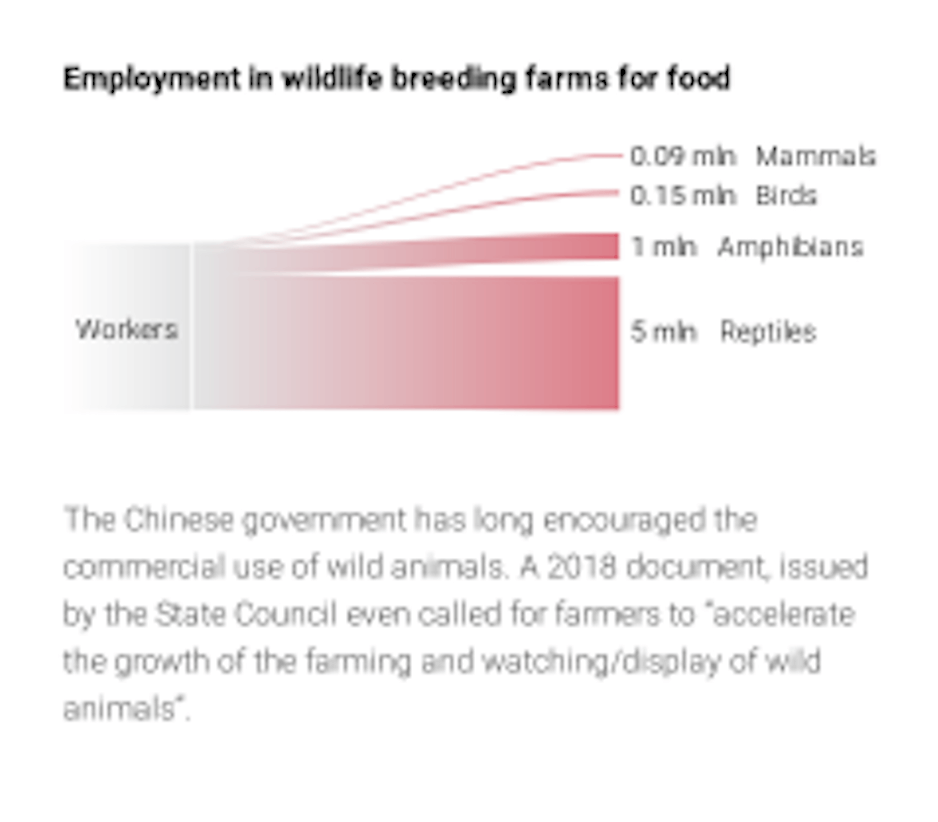

La primera parte de la infografía que destacaremos es la imagen figurativa de un pangolin donde a través de diversos elementos, como la comparación con la escala humana y la presentación de colores se dan ejemplos del uso que se les da a los animales.
El segundo elemento a destacar es el uso del color en la simbología de las ilustraciones a escala real de los animales, lo que nos ayuda a comprender de una manera visual lo que se intenta explicar.
El tercer elemento son los gráficos no figurativos que se encuentran en el costado de la infografía, donde se representa el valor monetario y la cantidad de empleados según el sector comercial del tráfico de animales.

El último elemento de la infografía impresa a analizar, serán los textos que acompañan las 4 fotografías de los animales, donde se explican los usos que se les da a algunas partes de ellos y a través de flechas se indica exactamente su ubicación en la corporalidad.
INFOGRAFÍA DIGITAL
En esta parte de la infografía digital se entregan datos que no se observan en la impresa a través de un gráfico mixto. estos datos consisten en la producción de piel de animales exóticos en China durante el 2018.
En este gráfico no figurativo podemos observar que se entregan los mismos datos de la infografía impresa, pero en círculos que ayudan a comprender una forma más visual lo que se quiere explicar.
Aquí podemos observar la representación figurativa de los animales al igual que en la infografía impresa; pero están separados en distintos grupo según su especie (reptiles, anfibios, aves y mamíferos)
Finalmente, vemos en este gráfico no figurativo una información que no se encuentra en la infografía impresa; donde se representa la empleabilidad en granjas donde se crian animales para alimentos .
¿Cómo podrían justificarse todas las modificaciones? ¿Se trata de una simple adaptación de datos de un sustrato a otro? Convendría pensar en una reestructuración completa del trabajo infográfico, que se hace atiendiendo a los usos y costumbres asociadas a cada medio?